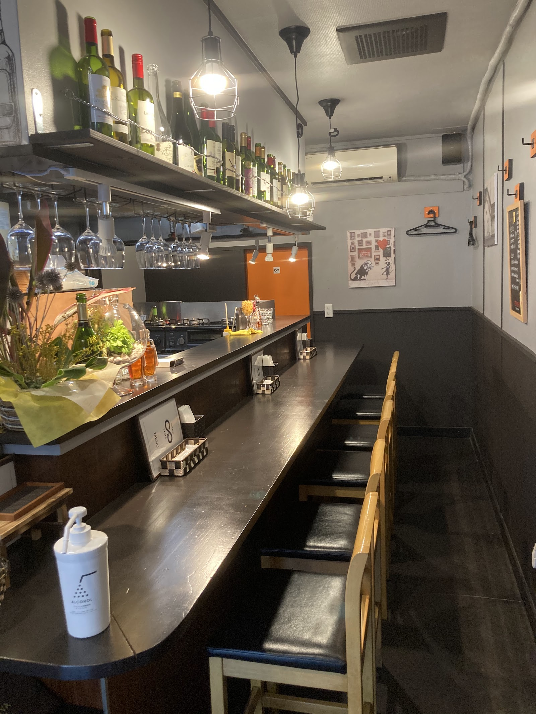
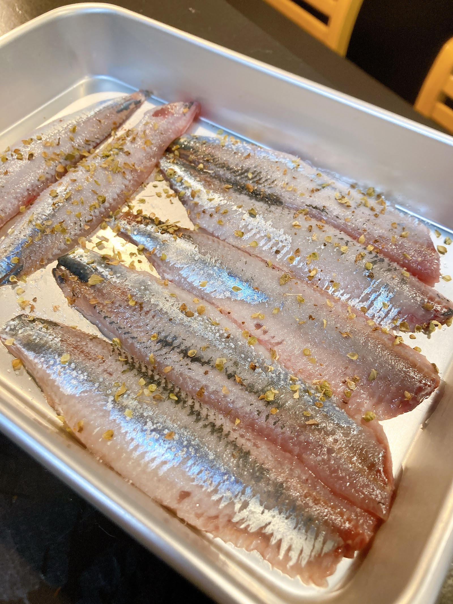
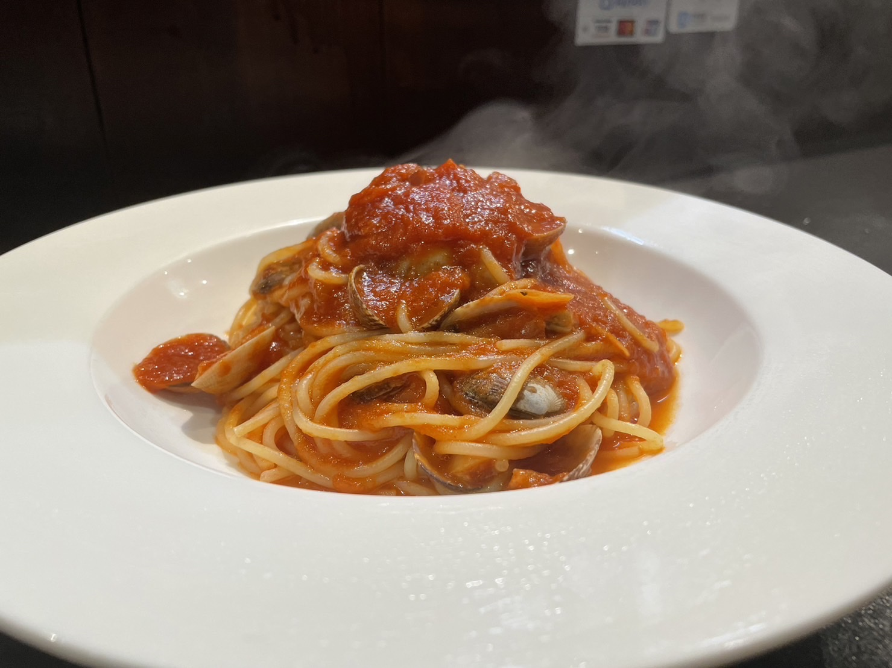
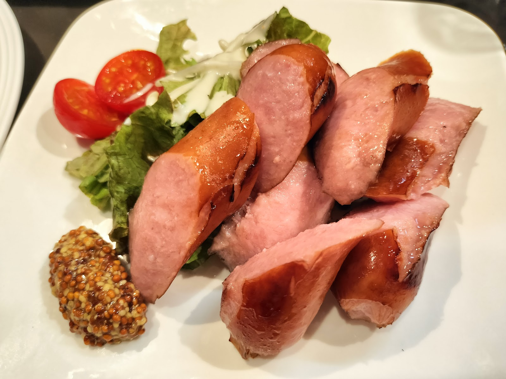
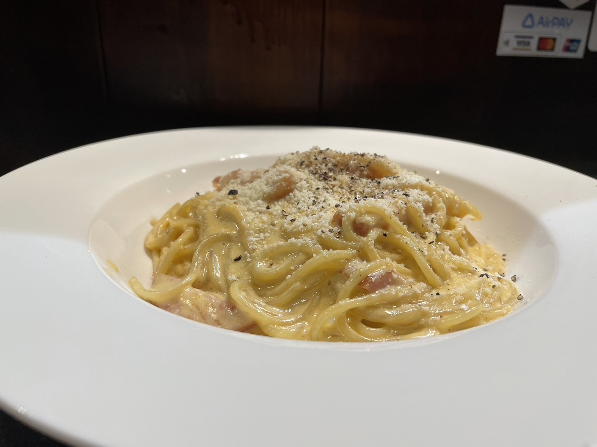
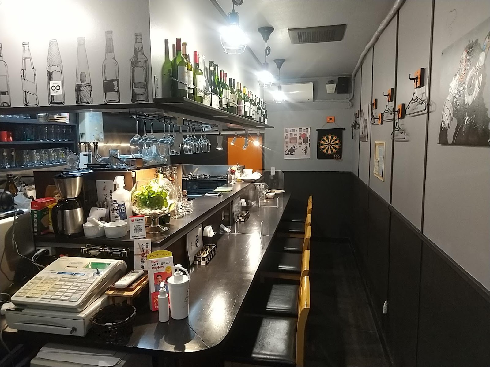
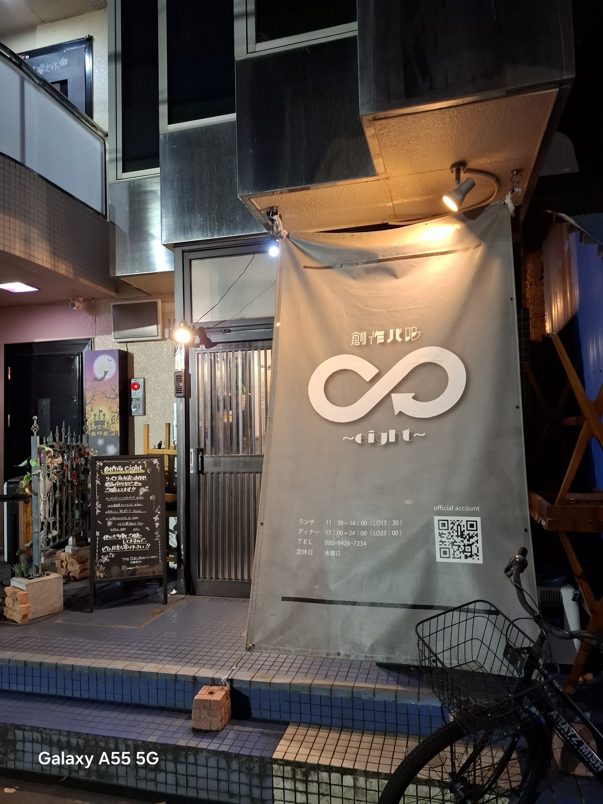

Photo
フォトギャラリー

写真: 創作バルeight(Googleマップ)

写真: 創作バルeight(Googleマップ)

写真: kyoko Y(Googleマップ)

写真: tomocolle(Googleマップ)

写真: kyoko Y(Googleマップ)

写真: うずねこ(Googleマップ)

写真: やすー(Googleマップ)
Voice
お客様の声
★★★★★
まずは一度みなさまきっといってみてください。 休みは水曜日です。（令和５年3月11日情報） 何を食べてもおいしいです。 半世紀生きてきましたが、 イタリアンではわたしはここが1番です。 お味が優しいので少食なのですが 沢山食べちゃいます。 お席は名前の通り8席。 カウンターで人柄のよいマスターがテキパキお仕事をされています。 1人もよし、友達やカップルもよし 娘も取手で1番と言っていましたので、 老若男女おいしくいただける 気さくなイタリアンです。 ♡ホタテのリゾット おいしかったぁ。また早くたべたい。今食べたい。 コストパフォーマンスもよすぎです。 お味は太鼓判。 ぜひいってみてね。 追記 ５年４月４日 高校生の息子がこちらのお料理の大ファンになり17時から営業されているため、 夜の帳が下りる塾の前などに一人で立ち寄らせていただいてます。 その時のお皿の数々の画像を追加しました♡ おいしいですよー！
★★★★★
たくさん創作バルはありますが、ここは段違い。 何を食べても美味しいです。 店長の宮本さんも素敵な方で下積みもしっかりした確かな技術力を感じます！ 取手にきたら絶対来て損はないです。
★★★★★
通常メニューの他に前菜や主菜を飲んでいるお酒にあわせて取り繕ってくれる貴重なお店。 パスタがどれも逸品なのでお昼に営業してくれるとありがたいが今は我慢。夜にご馳走になりに行きます。
★★★★★
ソーセージのグリル！ 柑橘味の爽やかな香りがするソーセージがとっても美味です。 他のメニューも、一品一品丁寧に提供されて、とても居心地の良いオススメしたいお店です。
★★★★★
美味しいパスタ屋のeightです。 パスタもお酒もジュースも全て美味しくて、対応の優しい店長が作ってくれるので、また来たいと思いました。 パスタは美味しくて写真撮り忘れました笑
ご予約・お問い合わせ
お気軽にお電話・Instagramからお問い合わせください。